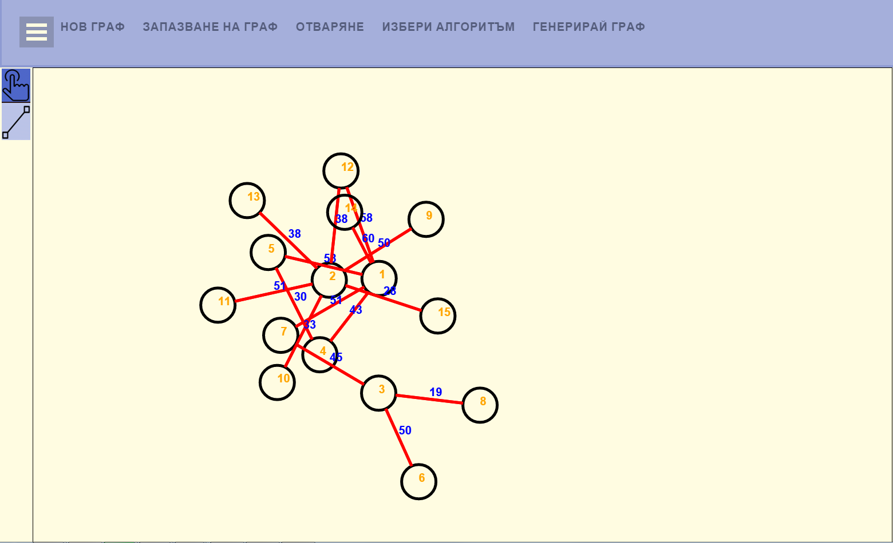
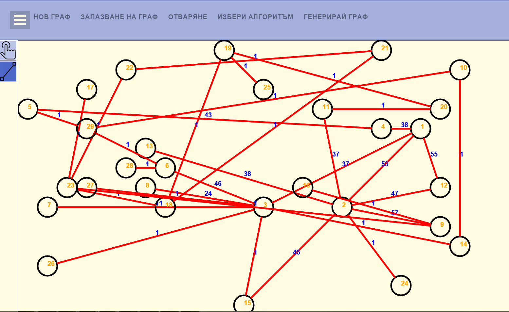
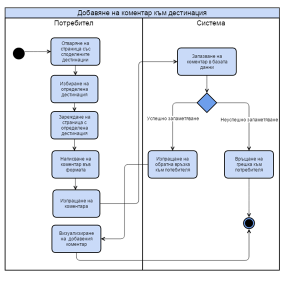

Визуализация на граф
Изпълнение на алгоритми върху граф
Проблем

Подход и използвани алгоритми

Описание на реализацията
Избор на технологии


Бъдещи насоки за развитие
Търсене на мост в граф и разделяне на подграфи
Търсене в ширина
Изводи
Благодарим за вниманието